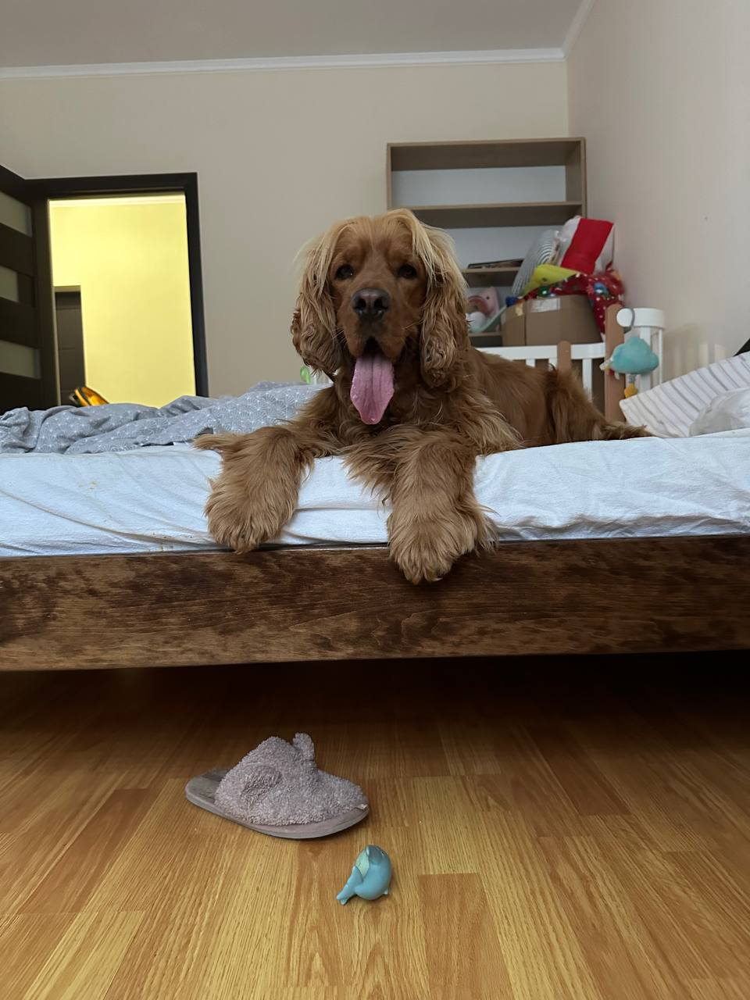

English Cocer Spaniel is an affectionate and lively breed known for its friendly disposition and intelligence. The English Cocker Spaniel is medium-sized with a sturdy, well-balanced body and a distinctive, silky coat that often comes in a variety of colors, including black, liver, and golden, among others. They are known for their expressive eyes and long, floppy ears, which add to their charming appearance.
